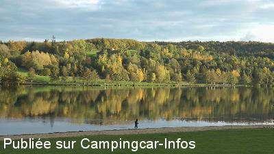

ASN = Aire de services avec stationnement nuit possible de :
AUBUSSON D'AUVERGNE
(N° 188)
Accès/adresse :
Base de Loisirs du Lac d'Aubusson
63120 AUBUSSON D'AUVERGNE
63120 AUBUSSON D'AUVERGNE
Latitude : (Nord) 45.75373° Décimaux ou 45° 45′ 13′′
Longitude : (Est) 3.61066° Décimaux ou 3° 36′ 38′′
Tarif : 2014
Stationnement, services : 6 €
Stationnement hors saison : 3 €
Type de borne : Artisanale
Services :


Boutique saisonnière avec produits du terroir
Autres informations :
Accessible toute l'année
Au bord de la rivière du Couzon
Tel +33(0)473 532 471
http://www.pays-courpiere.fr

Le 01/08/2014 par Pays de Courpière
de
Resp. du service développement
le 01/08/2014 :
Bonjour,
je vous joins une nouvelle photo. Afin de compléter l'information sur l'aire d'accueil du site du lac d'Aubusson : c'est effectivement 6 € la nuitée en saison et 3 € en hors saison. Depuis juillet 2014 : une petite boutique saisonnière a été créée et permet dorénavant de trouver quelques produits du terroir sur place. Concernant l'aire de vidange en elle-même, elle est effectivement artisanale mais une borne est en cours de travaux et devrait voir le jour en 2015. Le site est accessible toute l'année ainsi que l'accès à l'eau. Il y a également un espace wi-fi dans l'enceinte de la maison du lac.
Bonjour,
je vous joins une nouvelle photo. Afin de compléter l'information sur l'aire d'accueil du site du lac d'Aubusson : c'est effectivement 6 € la nuitée en saison et 3 € en hors saison. Depuis juillet 2014 : une petite boutique saisonnière a été créée et permet dorénavant de trouver quelques produits du terroir sur place. Concernant l'aire de vidange en elle-même, elle est effectivement artisanale mais une borne est en cours de travaux et devrait voir le jour en 2015. Le site est accessible toute l'année ainsi que l'accès à l'eau. Il y a également un espace wi-fi dans l'enceinte de la maison du lac.
de
Anemone 66
le 04/07/2014 :
Sur une aire de 200 places, nous étions 2. Endroit calme et reposant, avec un peu d'ombre...car il s'agit d'un endroit réservé également aux voitures .
Aire de service très désuète, surtout pour vider les eaux usées. 6 euros, c'est un peu cher d'autant plus qu'à partir de minuit, il n'y a plus de lumière. Noir complet.
Sur une aire de 200 places, nous étions 2. Endroit calme et reposant, avec un peu d'ombre...car il s'agit d'un endroit réservé également aux voitures .
Aire de service très désuète, surtout pour vider les eaux usées. 6 euros, c'est un peu cher d'autant plus qu'à partir de minuit, il n'y a plus de lumière. Noir complet.
de
dan
le 27/08/2012 :
Y étions les 9, 10, 11, 12 et 13/08/2012. Base de loisirs superbes. Toutefois, les voitures devraient roulées plus lentement. Il est vrai que s'est tellement drôle de lever un nuage de poussière derrière soi. Pas d'autre désagrément à signaler. Très, très calme.
Y étions les 9, 10, 11, 12 et 13/08/2012. Base de loisirs superbes. Toutefois, les voitures devraient roulées plus lentement. Il est vrai que s'est tellement drôle de lever un nuage de poussière derrière soi. Pas d'autre désagrément à signaler. Très, très calme.
de
JEAN MARIE
le 17/10/2011 :
Jolie base de loisirs au bord d'un lac. Calme et sérénité, jusqu'au moment ou des jeunes sont venus nous emm..... avec des motos cross et leur musique à fond.
Jolie base de loisirs au bord d'un lac. Calme et sérénité, jusqu'au moment ou des jeunes sont venus nous emm..... avec des motos cross et leur musique à fond.
de
Didier
le 19/08/2010 :
Sommes passés le 29/07, superbe coin, calme, très peu de promeneurs, le tour du lac à pied vaut le détour.
Sommes passés le 29/07, superbe coin, calme, très peu de promeneurs, le tour du lac à pied vaut le détour.
de
GILISA
le 15/08/2010 :
Bonjour à tous. Effectivement, c'est une superbe aire, au calme, mais il faut vraiment avoir envie de payer, difficile de trouver l'endroit où laisser son obole... Mais en cherchant on y arrive, si on le veut vraiment et 6€ pour une nuit au calme et les services. On aimerait trouver cela plus souvent. §
Bonjour à tous. Effectivement, c'est une superbe aire, au calme, mais il faut vraiment avoir envie de payer, difficile de trouver l'endroit où laisser son obole... Mais en cherchant on y arrive, si on le veut vraiment et 6€ pour une nuit au calme et les services. On aimerait trouver cela plus souvent. §